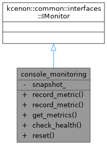

Simple monitoring implementation using common::interfaces::IMonitor. More...


Public Types | |
| using | VoidResult = kcenon::common::VoidResult |
Public Member Functions | |
| VoidResult | record_metric (const std::string &name, double value) override |
| VoidResult | record_metric (const std::string &name, double value, const std::unordered_map< std::string, std::string > &tags) override |
| kcenon::common::Result< kcenon::common::interfaces::metrics_snapshot > | get_metrics () override |
| kcenon::common::Result< kcenon::common::interfaces::health_check_result > | check_health () override |
| VoidResult | reset () override |
Private Attributes | |
| kcenon::common::interfaces::metrics_snapshot | snapshot_ |
Detailed Description
Simple monitoring implementation using common::interfaces::IMonitor.
- Note
- Issue #312: Updated to use common_system's IMonitor interface.
- Examples
- composition_example.cpp.
Definition at line 98 of file composition_example.cpp.
Member Typedef Documentation
◆ VoidResult
| using console_monitoring::VoidResult = kcenon::common::VoidResult |
- Examples
- composition_example.cpp.
Definition at line 100 of file composition_example.cpp.
Member Function Documentation
◆ check_health()
|
inlineoverride |
- Examples
- composition_example.cpp.
Definition at line 135 of file composition_example.cpp.
◆ get_metrics()
|
inlineoverride |
- Examples
- composition_example.cpp.
Definition at line 131 of file composition_example.cpp.
References snapshot_.
◆ record_metric() [1/2]
|
inlineoverride |
- Examples
- composition_example.cpp.
Definition at line 102 of file composition_example.cpp.
References snapshot_.
◆ record_metric() [2/2]
|
inlineoverride |
Definition at line 108 of file composition_example.cpp.
References snapshot_.
◆ reset()
|
inlineoverride |
- Examples
- composition_example.cpp.
Definition at line 142 of file composition_example.cpp.
References snapshot_.
Member Data Documentation
◆ snapshot_
|
private |
- Examples
- composition_example.cpp.
Definition at line 148 of file composition_example.cpp.
Referenced by get_metrics(), record_metric(), record_metric(), and reset().
The documentation for this class was generated from the following file:
- examples/composition_example/composition_example.cpp